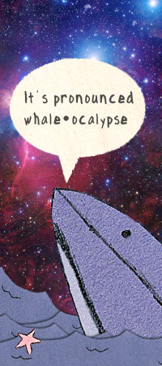

A faint red glow lit the evening sky from the shores of some distant city. Now empty, it was the last vestige of the race of men. The sea was calm and dark as a crescent moon dipped down bellow the horizon.
John floated up to the surface and poked his head out, scanning the water for signs of life. Once, ships had dotted the horizon in all directions, blinking green and white until the morning, every night. In the summer months, orange flames from drilling rigs had burned wildly on high perches casting eerie light on the platforms bellow. The early mornings had been filled with the dull hum of outboard motors, passing jets, and the deafening ping of submarines winding blindly through the deepest waters. These things were all gone now. The last of them had fallen dark and silent some months ago.
He spun round slowly, looking off to the south for some flicker of light or motion. But there was nothing, save the easy wind and endless black. He gave a puff of air as he slipped back down beneath the waves.
Now there was only time. He began to ponder.

Whaleocalypse is a comic about natural philosophy and the alienation of modern life. In a distant (but not too distant) post-apocalyptic future, whales roam the seas freely, barely aware that humans have vanished. Together, they muse about peculiarities in language, culture, and technology as they come to terms with their new found freedom and status as earth's dominant organism.
Whaleocalypse is written by Matt Korostoff. Most of the strips were published between 2009 and 2014, but whaleocalypse is not over. Whaleocalypse is eternal.
Whaleocalypse is open source.
